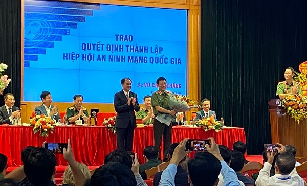

|  |
| Thứ trưởng Bộ Nội vụ Vũ Chiến Thắng trao Quyết định thành lập Hiệp hội An ninh mạng quốc gia và tặng hoa chúc mừng Đại hội. Ảnh: H. Anh |
Ngày 08/5/2023, Bộ Nội vụ đã ban hành Quyết định số 340/QĐ-BNV cho phép thành lập Hiệp hội An ninh mạng quốc gia, là tổ chức xã hội-nghề nghiệp của công dân và tổ chức Việt Nam hoạt động trong lĩnh vực an ninh mạng tự nguyện thành lập, nhằm bảo vệ quyền, lợi ích hợp pháp của hội viên, hỗ trợ nhau hoạt động có hiệu quả, đoàn kết bảo đảm an ninh mạng theo định hướng, chiến lược về an ninh mạng của Đảng, Nhà nước góp phần bảo vệ Tổ quốc và thúc đẩy phát triển kinh tế-xã hội của đất nước.
Đại hội đã thông qua chương trình, phương hướng hoạt động của Hiệp hội, Điều lệ của Hiệp hội và Đề án tổ chức nhân sự của Hiệp hội nhiệm kỳ 2023-2028.
Đại hội cũng đã bầu ra Ban Chấp hành, Ban Kiểm tra, Ban Thường vụ Hiệp hội, một số chức danh lãnh đạo và thông qua Nghị quyết Đại hội lần thứ nhất, nhiệm kỳ 2023-2028. Chủ tịch Hiệp hội An ninh mạng quốc gia là Thượng tướng Lương Tam Quang - Ủy viên Trung ương Đảng, Thứ trưởng Bộ Công an. Phó Chủ tịch thường trực là Trung tướng Nguyễn Minh Chính - Ủy viên Đảng ủy Công an Trung ương, Cục trưởng Cục An ninh mạng và phòng, chống tội phạm sử dụng công nghệ cao (Bộ Công an).
Các Phó Chủ tịch bao gồm: Ông Đặng Hoàng An - Chủ tịch Hội đồng thành viên Tập đoàn Điện lực Việt Nam (EVN); Đại tá Tào Đức Thắng - Chủ tịch kiêm Tổng Giám đốc Tập đoàn Công nghiệp-Viễn thông Quân đội (Viettel); Ông Tô Dũng Thái - Chủ tịch Hội đồng thành viên Tập đoàn Bưu chính Viễn thông Việt Nam (VNPT); PGS.TS Trương Gia Bình - Chủ tịch Hội đồng quản trị Công ty Cổ phần FPT; Ông Nguyễn Trung Chính - Chủ tịch Hội đồng quản trị, Chủ tịch Điều hành Công ty Cổ phần Tập đoàn Công nghệ CMC.
Tổng Thư ký Hiệp hội là Thượng tá Nguyễn Bá Sơn - Trưởng phòng Cục An ninh mạng và phòng, chống tội phạm sử dụng công nghệ cao (Bộ Công an); Phó Tổng thư ký, Chánh Văn phòng bao gồm ông Vũ Duy Hiền - Tổng Giám đốc Công ty Cổ phần Công nghệ An ninh mạng quốc gia Việt Nam (NCS) kiêm Chánh Văn phòng và Thiếu tá Đào Đức Triệu - Cán bộ Cục An ninh mạng và phòng, chống tội phạm sử dụng công nghệ cao (Bộ Công an)./.
Nguồn: Tạp chí Tổ chức Nhà nước